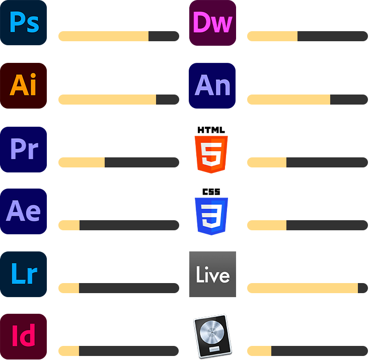
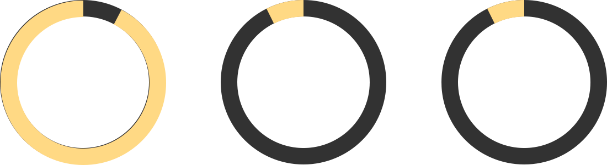

QUI SUIS-JE ?
Passionné par les médias numériques, l’art et la musique,
je suis actuellement en année préparatoire au centre de formation 3sheds.
En 2014, je m’inscris au CEPV en préapprentissage artistique.
Cette année de préapprentissage sera une très bonne expérience pour moi,
confirmant ainsi mon intérêt pour les métiers créatifs.
Par la suite, j’ai suivi des stages dans différents domaines avant de trouver un métier qui me passionne,
celui d'interactive media designer.
Autodidacte et créatif,
je pratique le piano et la composition acoustique et électronique,
le dessin et les échecs.
Afin d’être toujours à la pointe de ce qui se fait de mieux sur le moment,
j’aime acquérir de nouvelles compétences et approfondir mes connaissances.
COMPETENCES
LANGUES
